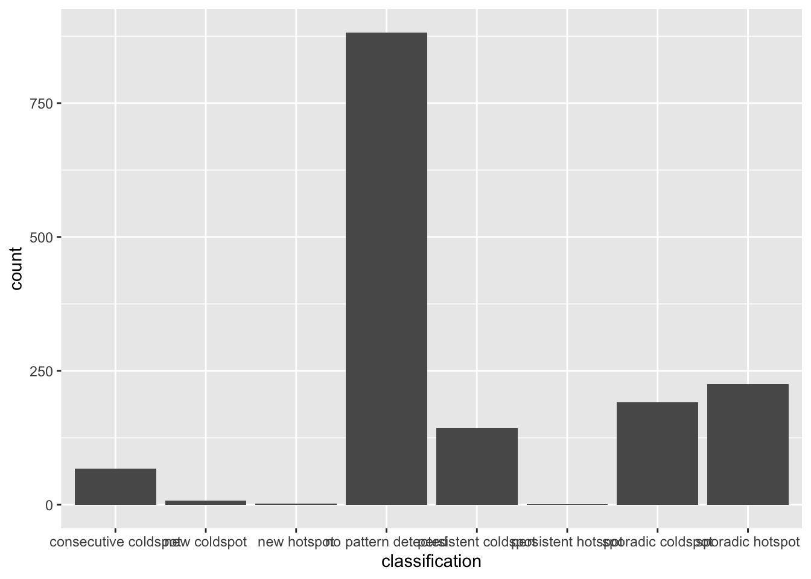
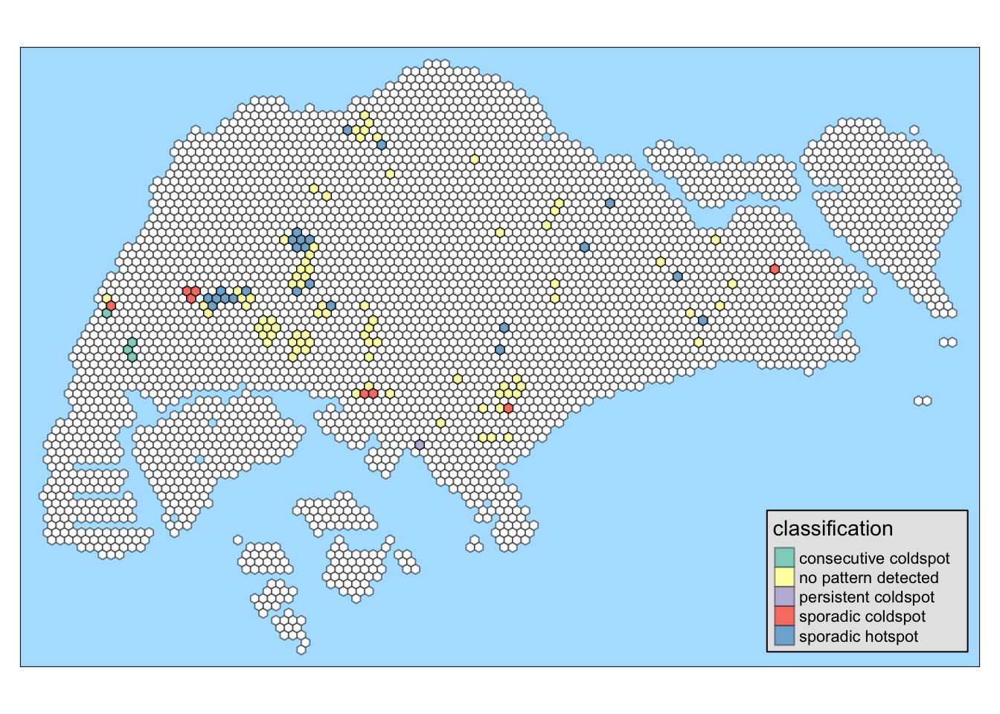

pacman::p_load(sf, sfdep, tmap, tidyverse, plotly, knitr)Take-home Exercise 1D: Spatio-temporal Analysis with EHSA
Overview
The aim of this study is to uncover spatial and spatio-temporal mobility patterns of public bus passengers in Singapore.
The main modes of analysis to be used here are Local Indicators of Spatial Association (GLISA) and Emerging Hot Spot Analysis (EHSA).
In doing these study, we will be looking at bus trips started during the hours below.
| Peak hour period | Bus tap on time |
|---|---|
| Weekday morning peak | 6am to 9am |
| Weekday evening peak | 5pm to 8pm |
| Weekend/holiday morning peak | 11am to 2pm |
| Weekend/holiday evening peak | 4pm to 7pm |
More details about the study can be found here.
In this part of the study, we will do spatio-temporal analysis with EHSA using bus commuter traffic data generated from Data Wrangling. We will also attempt the answer the Open Questions from Geovisualization and Analysis:
What are the commuting patterns of people during weekdays? weekends?
Are bus trips really more spread out throughout the day during weekend?
Setup
Setting Up the R Environment
We will load the following R packages needed for this study.
tmap: for thematic mapping
sf: for geospatial data handling
tidyverse: for non-spatial data handling
sfdep: for spatial analysis
knitr:for prettifying presentation
plotly: for interactive plots
Environment settings
We will also set the default settings on for this document
tmap_styleto natural: for displaying the maps with preferred styleset seed for reproducibility of results
tmap_style("natural")
set.seed(1234)Loading the data
Important
Before running this part, please run all the code chunks in Data Wrangling as it generates the data needed for this document.
Use read_rds() to load the rds data needed for geovisualization and analysis.
sg_honeycomb <- read_rds("data/rds/sg_honeycomb_with_num_busstops.rds")
hourly_from_hex <- read_rds("data/rds/hourly_from_hex202310.rds")
busstop_hc <- sg_honeycomb %>% filter(NUM_BUS_STOPS > 0)sg_honeycomb- contains the honeycomb grid that covers Singapore boundarieshourly_from_hex- hourly bus commuter traffic data for October 2023
Creating space-time cube
First attempt
weekday_hourly_sf <-
hourly_from_hex %>%
filter(DAY_TYPE == "WEEKDAY") %>%
ungroup() %>%
select(c(1, 3, 4))weekday_st <- spacetime(weekday_hourly_sf, busstop_hc,
.loc_col = "HEXAGON_ID",
.time_col = "HOUR_OF_DAY")
is_spacetime_cube(weekday_st)[1] FALSEFilling the gaps
Attempt was successful because we are missing some time-location combinations.
As we have 1519 hexagons and 24 hours in a day, the sf must have \(1519 \times 24\) or 36456 rows.
full_combo <-
expand.grid(
HEXAGON_ID = unique(busstop_hc$HEXAGON_ID),
HOUR_OF_DAY = 0:23
)
nrow(full_combo)[1] 36456weekday_hourly_sf <- full_join(weekday_hourly_sf, full_combo)
weekday_hourly_sf$TRIPS[is.na(weekday_hourly_sf$TRIPS)] <- 0
weekday_hourly_sf <- weekday_hourly_sf %>% filter(HOUR_OF_DAY >= 6 & HOUR_OF_DAY < 14)
weekday_hourly_sf <- weekday_hourly_sf %>%
left_join(busstop_hc) %>% st_sf()weekday_st <- spacetime(weekday_hourly_sf, busstop_hc,
.loc_col = "HEXAGON_ID",
.time_col = "HOUR_OF_DAY")
is_spacetime_cube(weekday_st)[1] TRUEDeriving spatial weights
weekday_nb <-
weekday_st %>%
activate("geometry") %>%
mutate(nb = include_self(st_contiguity(geometry)),
wt = st_inverse_distance(nb, geometry,
scale = 1,
alpha = 1),
.before = 1) %>%
set_nbs("nb") %>%
set_wts("wt")Computing local Gi*
gi_stars <- weekday_nb %>%
group_by(HOUR_OF_DAY) %>%
mutate(gi_star = local_gstar_perm(
TRIPS, nb, wt)) %>%
unnest(gi_star)Mann-Kendall
weekday_cbg <- gi_stars %>%
ungroup() %>%
filter(HEXAGON_ID == "48") %>%
select(HEXAGON_ID, HOUR_OF_DAY, gi_star)Plot
p <- ggplot(data = weekday_cbg,
aes(x = HOUR_OF_DAY,
y = gi_star)) +
geom_line() +
theme_light()
ggplotly(p)weekday_cbg %>%
summarise(mk = list(
unclass(
Kendall::MannKendall(gi_star)))) %>%
unnest_wider(mk)# A tibble: 1 × 6
tau sl S D varS geometry
<dbl> <dbl> <dbl> <dbl> <dbl> <POLYGON [m]>
1 0.143 0.711 4 28.0 65.3 ((3917.538 28017.41, 3667.538 28161.75, 3667.53…EHSA
ehsa <- gi_stars %>%
group_by(HEXAGON_ID) %>%
summarise(mk = list(
unclass(
Kendall::MannKendall(gi_star)))) %>%
unnest_wider(mk)ehsa %>%
arrange(sl, abs(tau)) %>% head()# A tibble: 6 × 7
HEXAGON_ID tau sl S D varS geometry
<int> <dbl> <dbl> <dbl> <dbl> <dbl> <POLYGON [m]>
1 573 1.00 0.000837 28 28.0 65.3 ((11167.54 37110.68, 10917.54 372…
2 624 1.00 0.000837 28 28.0 65.3 ((11667.54 37110.68, 11417.54 372…
3 2197 1.00 0.000837 28 28.0 65.3 ((26667.54 27584.4, 26417.54 2772…
4 2385 1.00 0.000837 28 28.0 65.3 ((28167.54 32780.55, 27917.54 329…
5 3075 1.00 0.000837 28 28.0 65.3 ((35417.54 31481.52, 35167.54 316…
6 1191 -1.00 0.000837 -28 28.0 65.3 ((17167.54 37110.68, 16917.54 372…These are the emerging hot spots and cold spots
Emerging Hotspot Analysis
ehsa2 <- emerging_hotspot_analysis(
x = weekday_st,
.var = "TRIPS",
k = 1,
nsim = 99,
)#write_rds(ehsa2, "data/rds/weekday_ehsa.rds")
ehsa2 <- read_rds("data/rds/weekday_ehsa.rds")Visualization the distribution of EHSA classes
ggplot(data = ehsa2,
aes(x = classification)) +
geom_bar()
weekday_hourly_ehsa <- weekday_hourly_sf %>%
left_join(ehsa2,
by = join_by(HEXAGON_ID == location))ehsa_sig <- weekday_hourly_ehsa %>%
filter(p_value < 0.05)
tmap_mode("plot")
tm_shape(sg_honeycomb) +
tm_fill(col="white") +
tm_borders(alpha = 0.5) +
tm_shape(ehsa_sig) +
tm_fill("classification") +
tm_borders(alpha = 0.4)